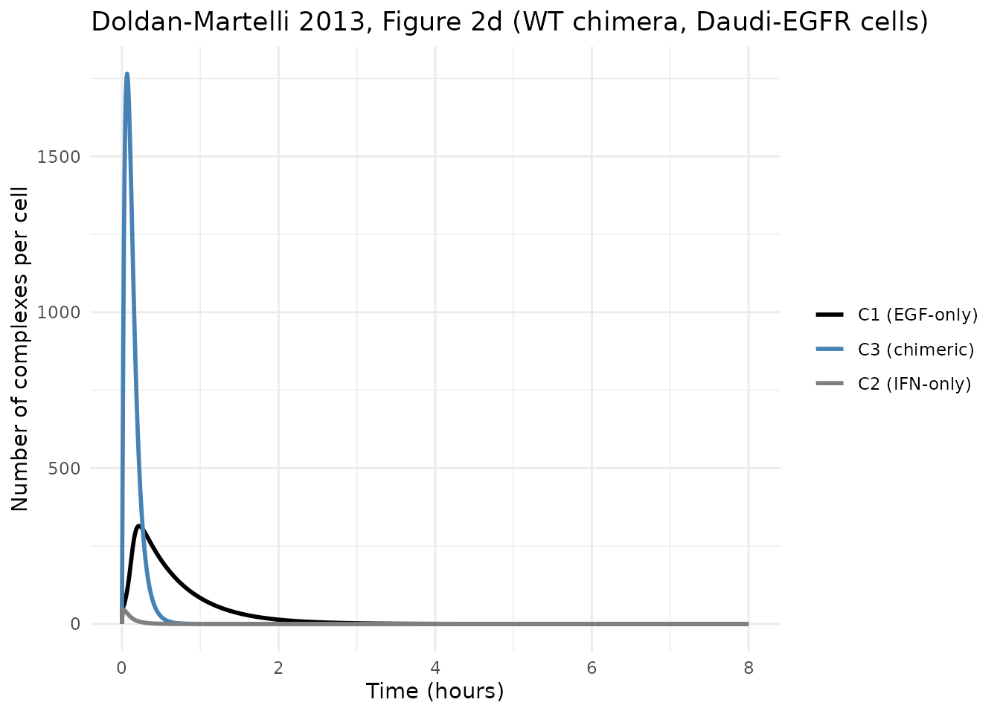
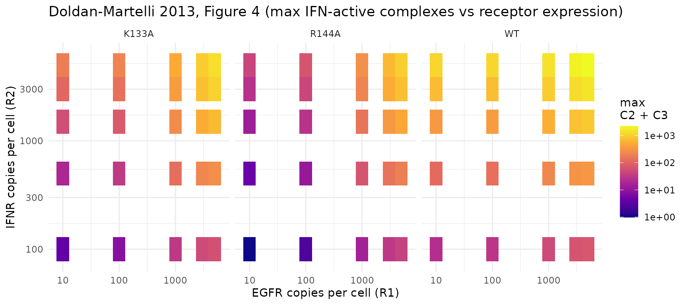

EGF-IFN chimeric ligand (Doldan-Martelli 2013)
Source:vignettes/articles/DoldanMartelli_2013_EGF_IFN_chimera.Rmd
DoldanMartelli_2013_EGF_IFN_chimera.RmdModel and source
- Citation: Doldan-Martelli V, Guantes R, Miguez DG. A mathematical model for the rational design of chimeric ligands in selective drug therapies. CPT Pharmacometrics Syst Pharmacol. 2013;2(2):e26.
- DOI: https://doi.org/10.1038/psp.2013.2
- Open access (CC BY).
This is a deterministic mechanistic in-vitro receptor-binding model of an EGF-IFNalpha-2a chimeric ligand engaging two distinct surface receptors (EGFR and IFNR) on cells. The chimera is composed of an EGF “targeting” subunit linked to an IFNalpha-2a “activity” subunit; the case-study cells are parental Daudi (a human Burkitt-lymphoma line with low endogenous EGFR) and a Daudi-EGFR variant engineered to overexpress EGFR ~300-fold.
Each subunit can bind its corresponding receptor independently. Once
one subunit is engaged, the free subunit is confined to a small
effective reaction volume near the cell membrane (a “spherical gasket”
of thickness h + a), so the local concentration available
to the second receptor is greatly increased. The second binding event
therefore proceeds at an effective on-rate set by the slower of (a)
two-dimensional receptor diffusion to the partner complex and (b) the
intrinsic 3D affinity scaled into the local reaction volume.
Internalization removes engaged complexes from the surface.
The paper develops the model for three IFN affinity variants (wild-type IFNalpha-2a, K133A mutant, R144A mutant – progressively lower IFNR affinity) and compares dynamics in parental Daudi vs Daudi-EGFR cells. The headline finding is that lower-affinity IFN variants give higher selectivity (greater fold-difference in IFN activation between cells overexpressing EGFR and parental cells) because they rely on the EGFR targeting subunit to be retained near the membrane.
Population
This is an in-vitro model. There are no clinical subjects, no IIV, no residual error. The “covariates” of the system are:
-
Cell line – chooses the initial counts of EGFR
(
R1_0) and IFNR (R2_0) per cell. Paper Table 1 (ref. 14) reports 22 EGFR + 2800 IFNR per parental Daudi cell, and 5640 EGFR + 3600 IFNR per Daudi-EGFR cell. -
IFN variant – chooses the IFN-IFNR association rate
k2onand dissociation ratek2off. EGF-EGFR rates are fixed at the wild-type EGF values (paper Table 1, ref. 30 and 31). -
Extracellular ligand concentration
L– held constant during the 8-hour assay window per the paper’s Methods (paper p. 6, Supplementary Text S1; internalized ligand is small compared with bulk supply).
The file defaults to wild-type IFN chimera in Daudi-EGFR cells, with
L = 1 nmol/L. Override parameter values via
rxode2::ini() to switch scenarios (see “Replicating Figure
2 across variants” below).
Source trace
Per-parameter origin is recorded as an in-file comment next to each
ini() entry in
inst/modeldb/specificDrugs/DoldanMartelli_2013_EGF_IFN_chimera.R.
The table below consolidates the references.
| Equation / parameter | Value (default) | Source location |
|---|---|---|
Eq. 6 (k_c_i) |
derived in model()
|
Doldan-Martelli 2013, p. 6, Eq. 6 |
Eq. 7 (k_diff_i) |
derived | Doldan-Martelli 2013, p. 6, Eq. 7 |
Eq. 8 (b_i) |
derived | Doldan-Martelli 2013, p. 6, Eq. 8 |
Eq. 9 (k'_on_i) |
derived | Doldan-Martelli 2013, p. 6, Eq. 9 |
Eq. 10 (k_u_i) |
derived | Doldan-Martelli 2013, p. 6, Eq. 10 |
| Eqs. 11-15 (ODEs) | structural | Doldan-Martelli 2013, p. 6, Eqs. 11-15 |
k1on |
0.09 (nmol/L)^-1 min^-1 | Doldan-Martelli 2013, Table 1, ref. 30 |
k1off |
0.24 min^-1 | Doldan-Martelli 2013, Table 1, ref. 30 |
ke1 |
0.15 min^-1 | Doldan-Martelli 2013, Table 1, ref. 31 |
h1 |
90 Angstrom | Doldan-Martelli 2013, Table 1, ref. 32-33 |
D1 |
2.2e-10 cm^2/s | Doldan-Martelli 2013, Table 1, ref. 32-33; midpoint of stated range 2 - 2.4e-10 |
k2on (WT) |
0.22 (nmol/L)^-1 min^-1 | Doldan-Martelli 2013, Table 1, ref. 29 |
k2off (WT) |
0.66 min^-1 | Doldan-Martelli 2013, Table 1, ref. 29 |
k2on (K133A) |
0.041 (nmol/L)^-1 min^-1 | Doldan-Martelli 2013, Table 1, ref. 29 |
k2off (K133A) |
1.08 min^-1 | Doldan-Martelli 2013, Table 1, ref. 29 |
k2on (R144A) |
0.021 (nmol/L)^-1 min^-1 | Doldan-Martelli 2013, Table 1, ref. 29 |
k2off (R144A) |
2.58 min^-1 | Doldan-Martelli 2013, Table 1, ref. 29 |
ke2 |
0.046 min^-1 | Doldan-Martelli 2013, Table 1, ref. 28 |
h2 |
50 Angstrom | Doldan-Martelli 2013, Table 1, ref. 34 |
D2 |
1e-10 cm^2/s | Doldan-Martelli 2013, Table 1, ref. 21 |
A |
900 um^2 | Doldan-Martelli 2013, Table 1, ref. 23 |
a |
48.5 Angstrom | Doldan-Martelli 2013, Table 1, ref. 14; computed from Eq. 1 (worm-like chain) |
R1_0 Daudi |
22 molecules | Doldan-Martelli 2013, Table 1, ref. 14 |
R2_0 Daudi |
2800 molecules | Doldan-Martelli 2013, Table 1, ref. 14 |
R1_0 Daudi-EGFR |
5640 molecules | Doldan-Martelli 2013, Table 1, ref. 14 |
R2_0 Daudi-EGFR |
3600 molecules | Doldan-Martelli 2013, Table 1, ref. 14 |
Units of every term in every ODE
Dimensional analysis is mandatory for mechanistic models. Time is in
minutes throughout. State variables (egfr,
ifnr, c_egf, c_ifn,
c_full) are in molecules per cell. The derived 2D rate
constants (kdiff_i, k'_on_i,
kc_i) follow the paper’s “molecule^-1 min^-1”
normalization-by-A convention (Methods, p. 6, paragraph after Eq.
7).
| Term | Units | Notes |
|---|---|---|
k1on * egfr * L |
(nmol/L)^-1 min^-1 x mol x nmol/L | molecule/min, dimensionally consistent with R1 |
k1off * c_egf |
min^-1 x mol | molecule/min |
ku1 * c_full |
min^-1 x mol | molecule/min; ku1 = (1 - gamma1) * k1off
|
kc1 * egfr * c_ifn |
(per-molecule per-min) x mol x mol | molecule/min via paper’s 2D normalization |
kc2 * ifnr * c_egf |
(per-molecule per-min) x mol x mol | molecule/min |
ke1 * c_egf |
min^-1 x mol | internalization flux of EGF-only complex |
(ku1 + ku2 + ke3) * c_full |
min^-1 x mol | dissociation back to C1/C2 + internalization |
Unit conversion steps inside model():
-
V1_L = A * (h1 + a) * 1e-19converts (um^2) x (Angstrom) -> liters (1 um^2 x 1 Angstrom = 1e-22 m^3 = 1e-19 L). -
D_total = (D1 + D2) * 6e9converts cm^2/s -> um^2/min (1 cm^2/s = 1e8 um^2/s = 6e9 um^2/min). -
a_um = a * 1e-4converts Angstrom -> micrometer for theb_i / aratio. -
k'_on_i = k_on * 1e9 / (N_av * V_i)converts the table’s (nmol/L)^-1 min^-1 to (mol/L)^-1 min^-1 (factor of 1e9) before dividing by N_av and the reaction volume.
Load the model
mod <- readModelDb("DoldanMartelli_2013_EGF_IFN_chimera")
mod_typ <- rxode2::zeroRe(mod)
#> Warning: No omega parameters in the model
#> Warning: No sigma parameters in the modelThe model has no etas and no residual error, so zeroRe()
is a no-op beyond silencing the “no omega/sigma parameters”
warnings.
Baseline check (no ligand)
With no extracellular ligand (L = 0), no complex
formation occurs and both receptor pools should stay at the initial
counts indefinitely. This verifies the initial conditions
egfr(0) <- R1_0, ifnr(0) <- R2_0 and
c_egf(0) = c_ifn(0) = c_full(0) = 0 match the paper’s text
after Eq. 15.
mod_off <- suppressMessages(rxode2::ini(mod_typ, L = 0))
ev <- et(amt = 0, time = 0) |> et(seq(0, 480, by = 30)) # 8 hours
s_off <- rxSolve(mod_off, ev)
stopifnot(all.equal(range(s_off$egfr), c(5640, 5640)))
stopifnot(all.equal(range(s_off$ifnr), c(3600, 3600)))
stopifnot(all(s_off$c_egf == 0))
stopifnot(all(s_off$c_ifn == 0))
stopifnot(all(s_off$c_full == 0))
cat("Baseline (L=0): egfr stays at 5640, ifnr stays at 3600, complexes stay at 0. OK.\n")
#> Baseline (L=0): egfr stays at 5640, ifnr stays at 3600, complexes stay at 0. OK.Mass balance
Without de-novo receptor synthesis (the paper does not model
production), internalized molecules leave the surface and are lost from
the system. A useful sanity check is that the total EGFR-containing
species (egfr + c_egf + c_full) decreases monotonically and
that the difference between initial and current totals equals
the cumulative flux through ke1 * c_egf + ke3 * c_full.
Likewise for IFNR.
ev_fine <- et(amt = 0, time = 0) |> et(seq(0, 480, by = 0.5))
s <- rxSolve(mod_typ, ev_fine)
total_egfr_side <- s$egfr + s$c_egf + s$c_full
total_ifnr_side <- s$ifnr + s$c_ifn + s$c_full
# Monotonic non-increasing within solver tolerance
stopifnot(all(diff(total_egfr_side) <= 1e-6))
stopifnot(all(diff(total_ifnr_side) <= 1e-6))
cat(sprintf("EGFR-side total: %.1f at t=0 -> %.3f at t=480 (internalized = %.1f)\n",
total_egfr_side[1], tail(total_egfr_side, 1),
total_egfr_side[1] - tail(total_egfr_side, 1)))
#> EGFR-side total: 5640.0 at t=0 -> 0.001 at t=480 (internalized = 5640.0)
cat(sprintf("IFNR-side total: %.1f at t=0 -> %.3f at t=480 (internalized = %.1f)\n",
total_ifnr_side[1], tail(total_ifnr_side, 1),
total_ifnr_side[1] - tail(total_ifnr_side, 1)))
#> IFNR-side total: 3600.0 at t=0 -> 0.000 at t=480 (internalized = 3600.0)Replicating Figure 2 – WT chimera in Daudi-EGFR
The paper’s Figure 2d shows the dynamics of C1 (black,
EGF-only), C2 (gray, IFN-only) and C3 (blue,
fully-bound chimera) for the WT chimera in Daudi-EGFR cells over 0-8
hours. The figure is on an hours scale, but the rapid internalization
(ke1 = 0.15 /min -> EGF-complex half-life ~4.6 min;
ke3 = ke1 + ke2 = 0.196 /min -> chimera-complex
half-life ~3.5 min) means the rise-and-fall happens within the first
30-60 minutes of the 8-hour window.
s_d <- rxSolve(mod_typ, ev_fine)
s_d_long <- s_d |>
as.data.frame() |>
select(time, c_egf, c_ifn, c_full) |>
pivot_longer(-time, names_to = "species", values_to = "molecules")
ggplot(s_d_long, aes(x = time / 60, y = molecules, colour = species)) +
geom_line(linewidth = 1) +
scale_colour_manual(
values = c(c_egf = "black", c_ifn = "grey50", c_full = "steelblue"),
labels = c(c_egf = "C1 (EGF-only)", c_ifn = "C2 (IFN-only)", c_full = "C3 (chimeric)")
) +
labs(
x = "Time (hours)", y = "Number of complexes per cell",
colour = NULL,
title = "Doldan-Martelli 2013, Figure 2d (WT chimera, Daudi-EGFR cells)"
) +
theme_minimal()
Replicating Figure 2g-j – maxima across mutants and cell lines
The bar diagrams of Figure 2g-j report the maximum number of active
IFN complexes (C2 + C3, i.e. all complexes whose IFN
subunit is engaged) for each mutant in each cell line. The chimera
amplifies the signal in EGFR-overexpressing cells, especially for
low-affinity IFN mutants.
run_scenario <- function(label, k2on_v, k2off_v, R1_v, R2_v) {
m <- suppressMessages(
rxode2::ini(mod_typ, k2on = k2on_v) |>
rxode2::ini(k2off = k2off_v) |>
rxode2::ini(R1_0 = R1_v) |>
rxode2::ini(R2_0 = R2_v)
)
s <- rxSolve(m, ev_fine)
data.frame(
scenario = label,
max_ifn_active = max(s$ifn_active),
t_peak_min = s$time[which.max(s$ifn_active)]
)
}
scenarios <- bind_rows(
run_scenario("WT, Daudi", 0.22, 0.66, 22, 2800),
run_scenario("K133A, Daudi", 0.041, 1.08, 22, 2800),
run_scenario("R144A, Daudi", 0.021, 2.58, 22, 2800),
run_scenario("WT, Daudi-EGFR", 0.22, 0.66, 5640, 3600),
run_scenario("K133A, Daudi-EGFR", 0.041, 1.08, 5640, 3600),
run_scenario("R144A, Daudi-EGFR", 0.021, 2.58, 5640, 3600)
)
knitr::kable(scenarios, digits = 1,
caption = "Maximum active IFN complexes (C2 + C3) per cell across paper Figure 2g-j scenarios.")| scenario | max_ifn_active | t_peak_min |
|---|---|---|
| WT, Daudi | 643.0 | 4.5 |
| K133A, Daudi | 104.2 | 5.5 |
| R144A, Daudi | 26.5 | 6.0 |
| WT, Daudi-EGFR | 1799.2 | 4.0 |
| K133A, Daudi-EGFR | 1236.0 | 5.5 |
| R144A, Daudi-EGFR | 914.0 | 5.5 |
The selectivity ratio (Daudi-EGFR maximum / Daudi maximum) increases as IFN affinity decreases, reproducing the paper’s central qualitative finding (paper Results section “Selectivity is enhanced in chimeras with reduced IFN affinity”, p. 4):
sel <- scenarios |>
mutate(variant = sub(",.*", "", scenario),
cell = trimws(sub(".*,", "", scenario))) |>
select(variant, cell, max_ifn_active) |>
pivot_wider(names_from = cell, values_from = max_ifn_active) |>
mutate(selectivity_ratio = `Daudi-EGFR` / Daudi)
knitr::kable(sel, digits = c(0, 1, 1, 2),
caption = "Selectivity = Daudi-EGFR / Daudi maximum IFN active complexes.")| variant | Daudi | Daudi-EGFR | selectivity_ratio |
|---|---|---|---|
| WT | 643.0 | 1799.2 | 2.80 |
| K133A | 104.2 | 1236.0 | 11.87 |
| R144A | 26.5 | 914.0 | 34.52 |
Replicating Figure 4 – dependence on receptor expression
Figure 4 of the paper sweeps R1(0) and
R2(0) from 1 to 6000 molecules per cell at fixed ligand
concentration L = 1 nmol/L and reports the maximum number
of IFN-active complexes as a color map. Below we sweep a coarser grid
for each of the three IFN variants and reproduce the qualitative shape:
WT amplifies broadly across EGFR levels, K133A shows the cleanest
threshold, and R144A is the most selective (low activity at low EGFR,
high activity only when EGFR is plentiful).
grid <- expand.grid(R1 = c(10, 100, 1000, 3000, 5000),
R2 = c(100, 500, 1500, 3000, 5000))
variants <- list(
WT = list(k2on = 0.22, k2off = 0.66),
K133A = list(k2on = 0.041, k2off = 1.08),
R144A = list(k2on = 0.021, k2off = 2.58)
)
sweep <- bind_rows(lapply(names(variants), function(v) {
pars <- variants[[v]]
rows <- lapply(seq_len(nrow(grid)), function(i) {
R1 <- grid$R1[i]; R2 <- grid$R2[i]
m <- suppressMessages(
rxode2::ini(mod_typ, k2on = pars$k2on) |>
rxode2::ini(k2off = pars$k2off) |>
rxode2::ini(R1_0 = R1) |>
rxode2::ini(R2_0 = R2)
)
s <- rxSolve(m, ev_fine)
data.frame(variant = v, R1 = R1, R2 = R2, max_ifn = max(s$ifn_active))
})
bind_rows(rows)
}))
ggplot(sweep, aes(x = R1, y = R2, fill = max_ifn)) +
geom_tile() +
scale_fill_viridis_c(option = "plasma", trans = "log10",
name = "max\nC2 + C3") +
scale_x_log10() + scale_y_log10() +
facet_wrap(~ variant, nrow = 1) +
labs(x = "EGFR copies per cell (R1)", y = "IFNR copies per cell (R2)",
title = "Doldan-Martelli 2013, Figure 4 (max IFN-active complexes vs receptor expression)") +
theme_minimal()
Assumptions and deviations
-
Compartment names are non-canonical. This model
uses
egfr,ifnr,c_egf,c_ifn, andc_fullbecause the paper’s species are surface receptors and binding complexes, not PK compartments.checkModelConventions()flags these because they do not match the registered PK compartment names (depot,central,peripheral1, …, ortarget/complex/total_targetfor TMDD). The mechanistic semantics here are receptor-binding, not drug disposition; canonical PK names would obscure the biology. Documented as a deviation rather than renamed. -
Concentration unit
molecules per celltriggers a convention warning because it lacks a/(the convention expects mass/volume). Again this is a faithful representation of the paper: the state and output are counts of molecular species on one cell’s surface, not a bulk-fluid concentration. -
Mu-reference aliasing. Each
ini()THETA is aliased to a model-local variable (k1on -> kk1on,A -> AA, …) at the top ofmodel(). nlmixr2est’s parser forbids more than one bare THETA in a single expression, and the ODE right-hand sides reference many THETAs each. The aliases carry the same values; this is a syntax workaround, not a numerical change. -
b_iuses initial receptor countsR1_0,R2_0rather than the dynamic statesegfr(t),ifnr(t). The 2D rate constantsk_diff_iandk'_on_iare structural properties of the cell membrane, derived from the initial receptor surface density. This is consistent with the paper’s text (the b_i / k_diff_i / k’_on_i values in Table 1 and the Methods are pre-computed once, not recalculated at every time step). -
D1uses 2.2e-10 cm^2/s (the midpoint of the stated range 2 - 2.4e-10 in Table 1). The paper does not say which point value was used for its quantitative results; the midpoint is the most defensible single value. -
Constant extracellular
L. Per the paper’s Methods (p. 6, paragraph after Eq. 15 referring to Supplementary Text S1), the extracellular ligand concentration is treated as constant during the simulated assay window. This is parameterLinini(), not a state. A user who wants to model ligand depletion should add a state and adjust thek1on * egfr * L/k2on * ifnr * Lterms accordingly. -
Three IFN variants share one model file. The file
defaults to wild-type IFN; the K133A and R144A mutants are parameter
swaps on
k2onandk2off(andke2if the user has a more recent source with mutant-specific internalization rates – the paper Table 1 reports the sameke2 = 0.046 /minfor all three). The cell-line choice is a parameter swap onR1_0andR2_0. The vignette scenarios above demonstrate each combination. -
Dose-response calibration to cytotoxicity (paper Figure 3
and Figure 6) is not in this model. The paper fits a sigmoidal
calibration curve mapping
max(C2 + C3)to % viable cells in each cell line, with separate sigmoidal parameters for Daudi and Daudi-EGFR (paper Figure 6 caption:Emax = 100, E0 = 0, plus cell-line-specificIPandS). This calibration is downstream of the structural ODE model and is not part of the canonical model file; a user who wants to reproduce Figure 3 dose-response can layer the sigmoidal on top of the simulatedmax(ifn_active)perL. - No IIV, no residual error. The paper presents a deterministic mechanism; no subject-level variability or measurement-error model is estimated.
References
- Doldan-Martelli V, Guantes R, Miguez DG. A mathematical model for the rational design of chimeric ligands in selective drug therapies. CPT Pharmacometrics Syst Pharmacol. 2013;2(2):e26. doi:10.1038/psp.2013.2.
- Cited within the paper for parameter sources: refs. 14 (case-study chimera and receptor counts), 21 (Berg-Purcell-style 2D diffusion rate), 23 (typical mammalian-cell surface area), 28-35 (binding, dissociation, internalization, and diffusion rate constants for EGFR and IFNR).